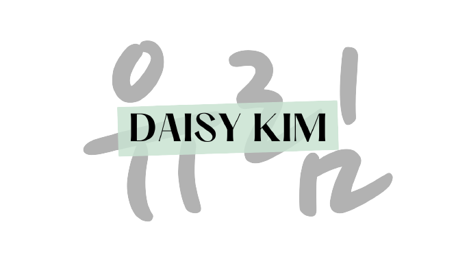

Contact
Projects
About

Creating an App for MARTA: Atlanta's Public Transit System
Reimagining Data: COVID Statistics in 2020-21
Argyle: Find a New Home Chatbot
Physical Prototyping: An Extension of MARTA
Linguistic Portfolio
CS Portfolio